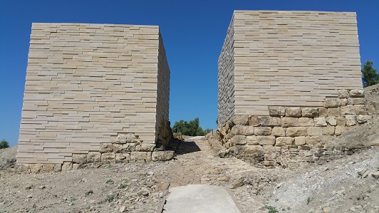
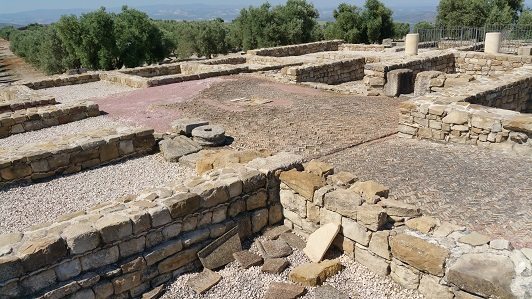
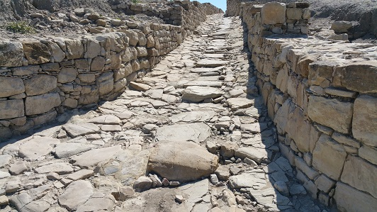
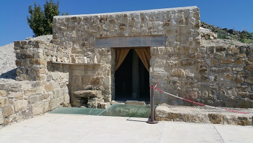
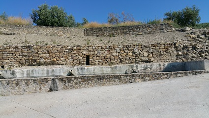
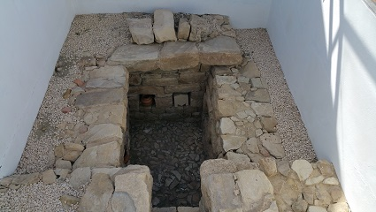

|
BAENA
Baena fue poblada desde el Paleolítico. Destaca el yacimiento ibero-romano de Torreparedones. En su termino se localizan varios municipios romanos; en el Cerro del Minguillar donde estuvo Municipium Flavium de Iponoba, el yacimiento de Izcar donde estuvo la Res Publica Contributa Ipscense o Torreparedones, probable asiento de la Colonia Inmune Virtus Iulia Itucci que menciona Plinio como integrante del Conventus Astigitanus. Torreparedones ha estado habitado desde el IV milenio a.e.c hasta el siglo XVI. Destacando su época íbera y romana. Ver: Video Antiguo oppidum ibérico amurallado. La muralla fue levantada hacia el año 600 a.e.c. y reforzada a intervalos regulares con torres. La puerta oriental es uno de los accesos con que contó la ciudad, flanqueada por dos imponentes torres para su defensa. Se cree que data de época republicana. La puerta estaba compuesta por dos hojas de madera y una contrapuerta, también de dos hojas de madera, con sus correspondientes quicialeras. El paso de entrada estaba acondicionado para el tráfico rodado y contaba con dos acerados que permitían el paso de los peatones. El derrumbe se estima acaeció a fines del s. V o principios del s. VI.
 El foro tiene unas dimensiones aproximadas de 25x25m. Su pavimento era de grandes losas de caliza gris. Destaca el busto en mármol blanco, a tamaño natural, del emperador Claudio divinizado y la inscripción monumental sobre el pavimento de la plaza que menciona el nombre de la persona que costeó la pavimentación. Fue reformado en época de Tiberio. Alrededor del foro hallamos el templo de modelo templa rostrata, sacro y político, la basílica y la curia.
El Macellum data del siglo I, alberga en su interior una serie de tiendas en torno a un patio central al aire libre rodeado de pórticos, en el que se suele ubicar un estanque, fuente o algún elemento decorativo. Reformado en el siglo II.
 El viario occidental al oeste del foro, el decumano máximo. Se han localizado dos calles pavimentadas con losas. EL trazado es irregular y se cree que se aprovecharía el trazado ibero. Entre finales del siglo II y hasta bien avanzado el siglo IV se produjo una colmatación continuada de esta vía.

A extramuros se localiza el Santuario Ibero-romano, del siglo III a.e.c al siglo II. Estaba asociado a la diosa Caeletis-Juno Lucina-Salus. diosa de la fertilidad y la salud. En la excavación se hallaron más de 300 exvotos. La mayoría de los cientos de exvotos encontrados corresponden a mujeres embarazadas. Destaca su "milagro de la luz", lucernrio-colimador, entre el betilo sagrado y la columna central.
 La fuente romana se localiza en la base del cerro y posiblemente tendría propiedades terapéuticas. Hace unos años la Fuente fue objeto de una reparación.
 Del yacimiento también destacamos la casa del panadero y la necrópolis oriental.

En febrero de 2017, Torreparedones desvela su anfiteatro romano del siglo I al oeste de la puerta occidental. El georadar confirma la existencia de una estructura elíptica de 77 metros de diámetro con capacidad para acoger a 5.000 espectadores. Podría ser muy similar al de Segóbriga. Se abandono a inicios de siglo III, en julio de 2019, se descubre la fachada y parte de su graderío. En octubre de 2020, el hallazgo de exvotos
zoomorfos confirma un segundo santuario en Torreparedones. También se
han encontrado varias tumbas, todo fuera del recinto del parque
arqueológico.
|
| CIUDADES DE HISPANIA | MENÚ | CÓRDOBA ROMANA |